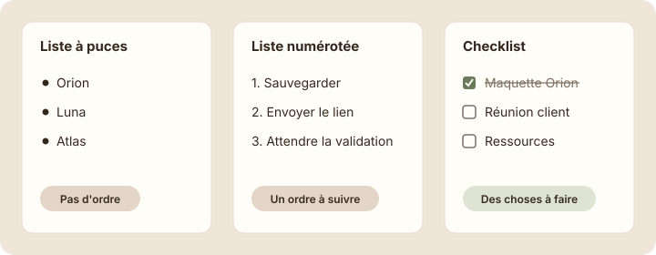

Titres et listes
Étape 1 : comprendre
Une page bien structurée se lit en quelques secondes : on voit tout de suite les grandes parties et ce qu'il y a à faire. Pour ça, tu n'as besoin que de deux familles de blocs : les titres et les listes.
Les titres
Notion propose trois tailles de titres, comme les parties d'un livre :
- Titre 1 : le plus grand. C'est le chapitre, le sujet principal de la page.
- Titre 2 : une partie du chapitre. Tu en as déjà créé un : « Cette semaine ».
- Titre 3 : une sous-partie, pour découper une partie longue.
Les listes
- Liste à puces : des éléments sans ordre particulier. Par exemple, les clients de l'agence.
- Liste numérotée : des étapes à suivre dans l'ordre. Notion numérote tout seul et met à jour les numéros si tu déplaces une ligne.
- Checklist (« Liste de tâches » dans le menu) : des choses à faire, chacune avec une case à cocher. Une tâche cochée apparaît barrée.
Chaque ligne d'une liste est un bloc. Quand tu appuies sur Entrée à la fin d'une ligne, Notion crée une nouvelle ligne du même type. Appuie deux fois sur Entrée pour sortir de la liste.

Les titres découpent la page en parties ; les listes rangent les éléments à l'intérieur de ces parties.
Attention : n'utilise pas un titre pour mettre un mot en valeur au milieu d'un texte. Un titre sert à annoncer une partie. Pour faire ressortir un mot, sélectionne-le et mets-le en gras (Ctrl + B, ou Cmd + B sur Mac).
La page d'accueil prend forme
Coche une tâche pour voir ce qui se passe. Dans Notion, c'est exactement pareil : un clic sur la case, et la tâche est barrée.
Studio Nova Titre 1
Bienvenue dans l'espace de travail de Studio Nova. Texte
Cette semaine Titre 2
Chaque ligne porte le nom de son type de bloc, à droite. Les trois tâches sont trois blocs checklist distincts.
Ajouter le titre principal et les tâches de la semaine
- Ouvre ta page « Accueil — Studio Nova ».
- Clique tout au début de la phrase de bienvenue, avant le « B » de « Bienvenue », et appuie sur Entrée. Une ligne vide apparaît au-dessus de la phrase.
- Remonte sur cette ligne vide, tape « /titre 1 », appuie sur Entrée, puis écris « Studio Nova ».
Capture d'écran Notion Titre 1 « Studio Nova » · images/captures/m02-titre-1.png
- Clique à la fin du titre « Cette semaine » et appuie sur Entrée.
- Tape « /tâches » et choisis « Liste de tâches ». Une case à cocher apparaît.
- Écris « Finaliser la maquette du site Orion », puis appuie sur Entrée : une nouvelle case apparaît.
- Ajoute « Préparer la réunion client » et « Mettre à jour les ressources » de la même façon.
- Appuie deux fois sur Entrée pour sortir de la liste.
Capture d'écran Notion Section « Cette semaine » avec trois tâches · images/captures/m02-checklist.png
Astuce : Notion comprend aussi des raccourcis tapés en début de ligne, suivis d'une espace : « # » pour un titre 1, « ## » pour un titre 2, « ### » pour un titre 3, « - » pour une liste à puces, « 1. » pour une liste numérotée et « [] » pour une case à cocher.
Exercice · dans Notion
Les tâches de la semaine
- Ajoute le titre 1 « Studio Nova » tout en haut du contenu de ta page d'accueil.
- Sous « Cette semaine », crée les trois tâches en checklist.
- Coche « Finaliser la maquette du site Orion », observe le résultat, puis décoche-la.
Résultat attendu : ta page affiche, dans l'ordre : le grand titre « Studio Nova », la phrase de bienvenue, le titre « Cette semaine » et trois cases à cocher. Une tâche cochée apparaît barrée, puis redevient normale quand tu la décoches.
Étape 4 : vérifier
À retenir
Objectif de la leçon : tu sais maintenant structurer une page avec trois niveaux de titres et choisir le bon type de liste : à puces, numérotée ou checklist.
- Titre 1, 2 et 3 découpent la page comme les chapitres et les parties d'un livre.
- Liste à puces : sans ordre. Liste numérotée : un ordre à suivre. Checklist : des choses à faire.
- Entrée crée une ligne du même type ; deux fois Entrée pour sortir de la liste.
Choisis une réponse avant de valider.
Ce sont des étapes à suivre dans un ordre précis : la liste numérotée le montre clairement, et Notion garde les numéros à jour. Un titre par étape alourdirait la page.
Choisis une réponse avant de valider.
La checklist ajoute une case à cocher devant chaque ligne. Une fois cochée, la tâche apparaît barrée : Lucas voit d'un coup d'œil ce qui reste à faire.
Choisis une réponse avant de valider.
Entrée crée une nouvelle ligne du même type, ici une nouvelle case. Pour sortir de la liste, il faut appuyer une seconde fois sur Entrée sur la ligne vide.